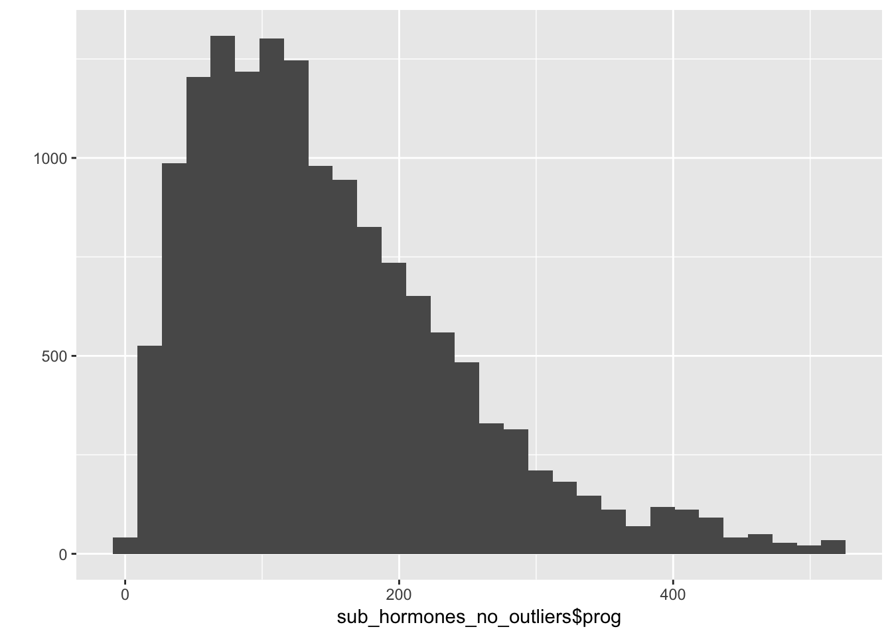
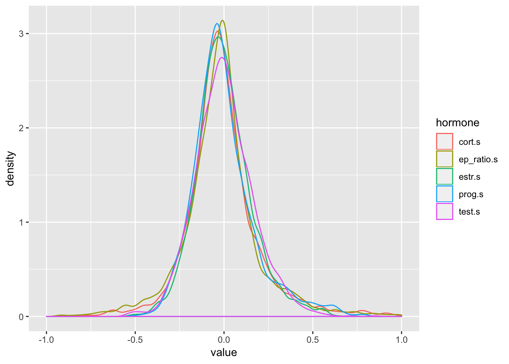
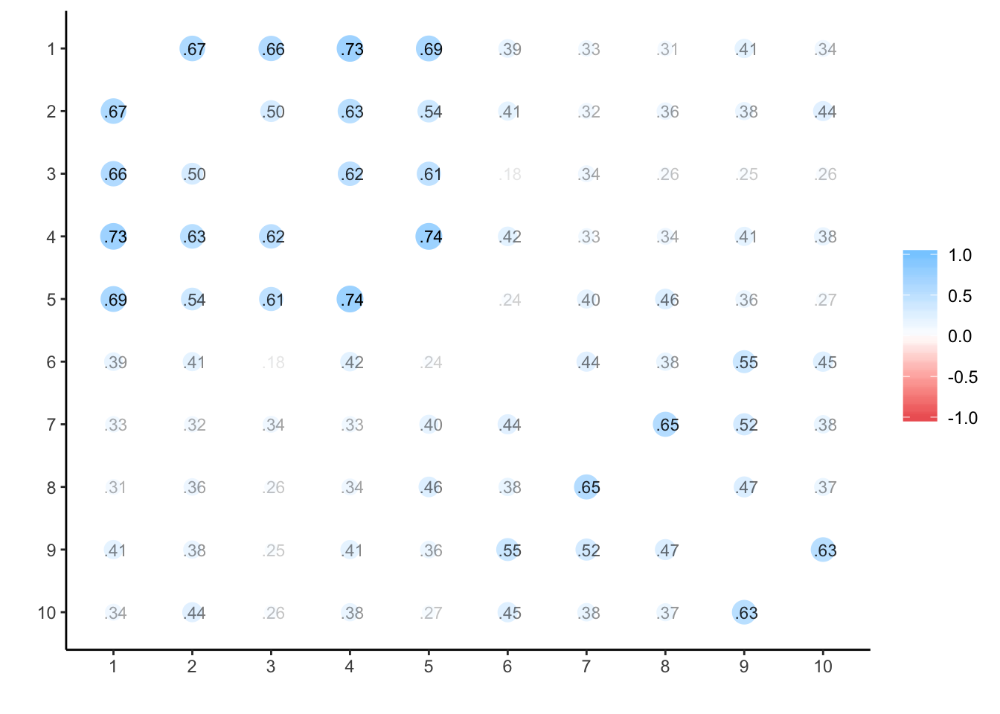
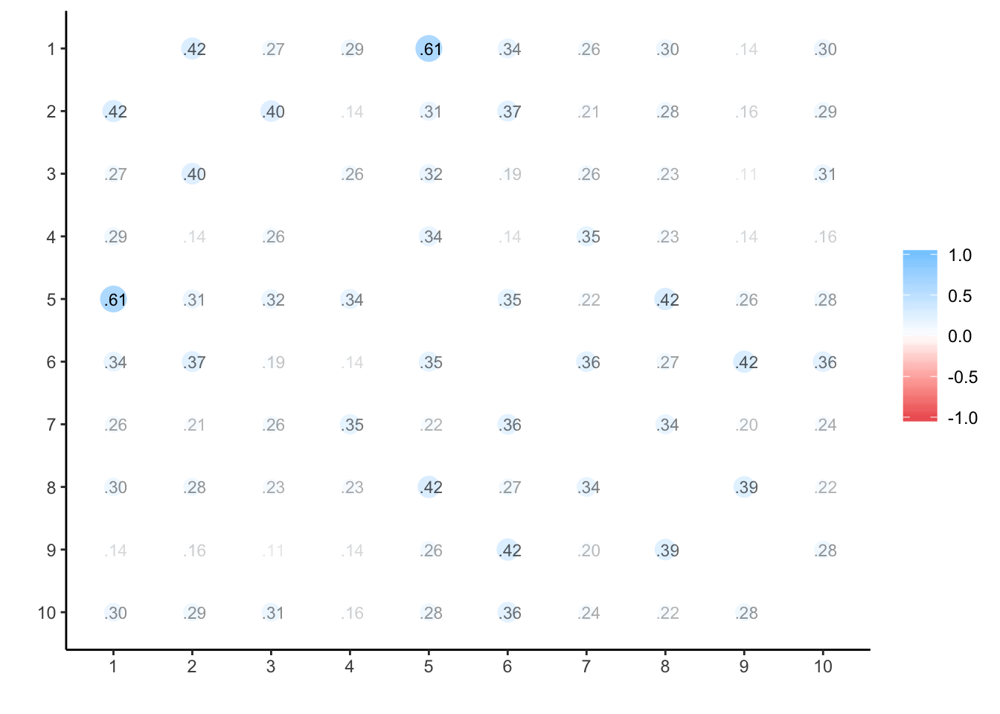
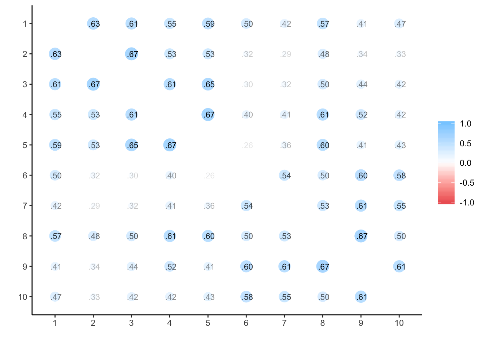
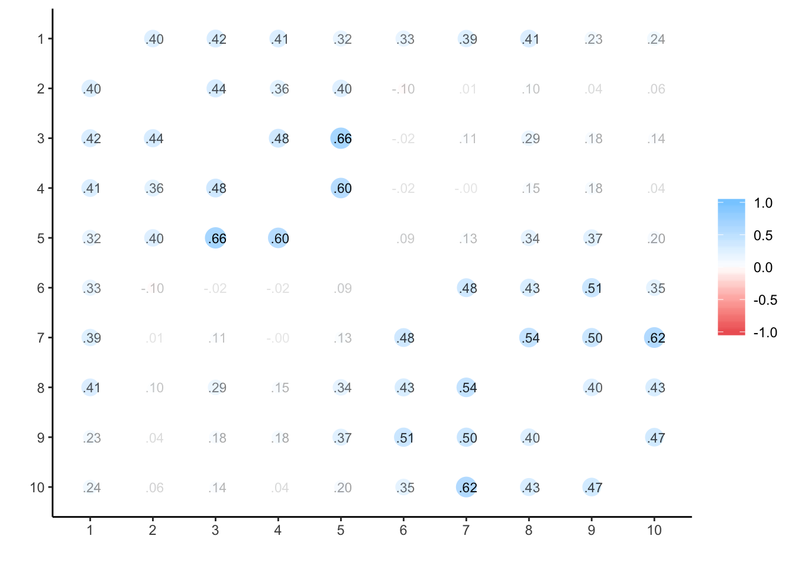

# Load packages
library(tidyr)
library(dplyr)##
## Attaching package: 'dplyr'## The following objects are masked from 'package:stats':
##
## filter, lag## The following objects are masked from 'package:base':
##
## intersect, setdiff, setequal, unionlibrary(ggplot2)
library(lme4)## Loading required package: Matrix##
## Attaching package: 'Matrix'## The following object is masked from 'package:tidyr':
##
## expandlibrary(lmerTest)##
## Attaching package: 'lmerTest'## The following object is masked from 'package:lme4':
##
## lmer## The following object is masked from 'package:stats':
##
## steplibrary(knitr)
options(scipen=999)
knitr::opts_chunk$set(cache=TRUE)# calculate standard errors
se <- function(x, na.rm = FALSE) {
if (na.rm) {
the.SE <- sqrt(var(x,na.rm=TRUE)/length(na.omit(x)))
} else {
the.SE <- sqrt(var(x,na.rm=FALSE)/length(x))
}
return(the.SE)
}
# short summaries for lmerTest
mySummary<-function(lmer_summary) {
coefTable <- lmer_summary$coefficients %>%
round(3) %>%
as.data.frame() %>%
rownames_to_column()
if (ncol(coefTable)>5) {
coefTable <- coefTable %>%
mutate(
sig = ifelse(.[6]<.001, " * * * ",
ifelse(.[6]<.01, " * * ",
ifelse(.[6]<.05, " * ",
ifelse(.[6]<.10, "+", "")))))
}
return(list(lmer_summary$ngrps, kable(coefTable)))
}Data entered from all white, heterosexual women not using any form of hormonal contraceptives Each row is all data from a single session (i.e. oc_id:date)
data_start <- read.csv("OCMATE_sexdrive_anon.csv", stringsAsFactors = F) # wide to long format
# effect code partnership status (no = -0.5, partner = 0.5)
data_all <- data_start %>%
gather(question, score, behavior_soi:total_SDI) %>%
mutate(
partner.e = ifelse(block_partner==0, -0.5, ifelse(block_partner==1, 0.5, NA)),
prog = progesterone,
estr = estradiol,
test = testosterone,
cort = cortisol
)# mean age at start of testing
data_all %>%
group_by(oc_id) %>%
summarise(
min_age = min(age, na.rm = TRUE)
) %>%
ungroup() %>%
group_by() %>%
summarise(
n = n(),
mean_age = mean(min_age, na.rm = TRUE),
sd_age = sd(min_age, na.rm = TRUE)
) %>% t()## [,1]
## n 375
## mean_age Inf
## sd_age Infdata_all %>%
group_by(question) %>%
summarise(
N_valid = sum(!is.na(score)),
N_missing = sum(is.na(score)),
mean_score = mean(score, na.rm = TRUE),
sd_score = sd(score, na.rm = TRUE)
)## # A tibble: 7 x 5
## question N_valid N_missing mean_score sd_score
## <chr> <int> <int> <dbl> <dbl>
## 1 attitude_soi 2189 87 9.22 3.50
## 2 behavior_soi 2140 136 5.74 2.67
## 3 current_sexdrive 2145 131 3.77 1.56
## 4 desire_soi 2168 108 8.06 2.96
## 5 dyadic_SDI 2098 178 35.5 11.9
## 6 solitary_SDI 2099 177 8.63 6.46
## 7 total_SDI 2051 225 44.1 15.7data_all %>%
group_by(oc_id) %>%
summarise(
sessions = n_distinct(date)
) %>%
group_by(sessions) %>%
summarise(
n = n()
) %>%
spread(sessions, n) %>%
t()## [,1]
## 1 15
## 2 9
## 3 5
## 4 9
## 5 233
## 6 1
## 7 1
## 8 2
## 9 2
## 10 98## Exclude observations with EPT missing hormone values
sub_hormones_no_EPT <- data_all %>%
filter(
!is.na(prog) |
!is.na(estr) |
!is.na(test)
)This is necessary because you can’t calculate subject-centered means with only one data point.
check_single_session <- sub_hormones_no_EPT %>%
group_by(oc_id, block) %>%
summarise(sessions = n_distinct(date)) %>%
ungroup() %>%
filter(sessions == 1)
sub_hormones_multisession <- sub_hormones_no_EPT %>%
anti_join(check_single_session, by=c('oc_id', 'block'))Remove below bottom sensitivity thresholds for assays (progesterone < 5, estrogen < 0.1), and remove outlier values (+/- 3SD from the mean)
sub_hormones_no_outliers <- sub_hormones_multisession %>%
mutate(
prog = ifelse(prog >= 5, prog, NA),
estr = ifelse(estr >= 0.1, estr, NA),
prog = if_else(prog>mean(prog, na.rm=TRUE) + 3*sd(prog, na.rm=TRUE) |
prog<mean(prog, na.rm=TRUE) - 3*sd(prog, na.rm=TRUE), NA_real_, prog),
estr = ifelse(estr>mean(estr, na.rm=TRUE) + 3*sd(estr, na.rm=TRUE) |
estr<mean(estr, na.rm=TRUE) - 3*sd(estr, na.rm=TRUE), NA, estr),
test = ifelse(test>mean(test, na.rm=TRUE) + 3*sd(test, na.rm=TRUE) |
test<mean(test, na.rm=TRUE) - 3*sd(test, na.rm=TRUE), NA, test),
cort = ifelse(cort>mean(cort, na.rm=TRUE) + 3*sd(cort, na.rm=TRUE) |
cort<mean(cort, na.rm=TRUE) - 3*sd(cort, na.rm=TRUE), NA, cort)
)
qplot(sub_hormones_no_outliers$prog)## `stat_bin()` using `bins = 30`. Pick better value with `binwidth`.## Warning: Removed 287 rows containing non-finite values (stat_bin).
# how many included?
check_hormone_exclusions <- sub_hormones_no_outliers %>%
group_by(oc_id, date) %>%
summarise(
e = is.na(mean(estr)),
p = is.na(mean(prog)),
t = is.na(mean(test)),
c = is.na(mean(cort))
) %>%
ungroup() %>%
select(e:c) %>%
gather('hormone','na', e:c) %>%
group_by(hormone) %>%
summarise(
'valid' = n() - sum(na),
'excluded' = sum(na)
) %>%
arrange(hormone)
kable(check_hormone_exclusions)| hormone | valid | excluded |
|---|---|---|
| c | 2155 | 11 |
| e | 2146 | 20 |
| p | 2125 | 41 |
| t | 2143 | 23 |
check_hormone_exclusions %>%
group_by() %>%
summarise(
total_hormone_samples_valid = sum(valid),
total_hormone_samples_excluded = sum(excluded)
) %>% gather("stat", "value", 1:length(.))## # A tibble: 2 x 2
## stat value
## <chr> <int>
## 1 total_hormone_samples_valid 8569
## 2 total_hormone_samples_excluded 95Divide results by a constant to put all hormones on ~ -0.5 to +0.5 scale
# subject-mean-centre hormones
# and divide by a constant to put all hormones on ~ -0.5 to +0.5 scale
data_hormones <- sub_hormones_no_outliers %>%
group_by(oc_id) %>%
mutate(prog.s = (prog-mean(prog, na.rm=TRUE))/400,
estr.s = (estr-mean(estr, na.rm=TRUE))/5,
test.s = (test-mean(test, na.rm=TRUE))/100,
cort.s = (cort-mean(cort, na.rm=TRUE))/0.5,
ep_ratio.s = ((estr/prog)-mean(estr/prog, na.rm=TRUE))/0.075) %>%
ungroup() %>%
as.data.frame()
data_hormones %>%
group_by(oc_id, date, prog.s, estr.s, test.s, cort.s, ep_ratio.s) %>%
summarise(n = n()) %>%
ungroup() %>%
gather("hormone", "value", prog.s:ep_ratio.s) %>%
ggplot(aes(value, colour=hormone)) +
geom_density(alpha=.5) +
scale_x_continuous(limits = c(-1,1))## Warning: Removed 200 rows containing non-finite values (stat_density).
data_hormones %>%
group_by(oc_id, date, prog, estr, test, cort) %>%
summarise(n = n()) %>%
ungroup() %>%
group_by() %>%
summarise(
mean_prog = mean(prog, na.rm = TRUE),
sd_prog = sd(prog, na.rm = TRUE),
se_prog = se(prog, na.rm = TRUE),
mean_estr = mean(estr, na.rm = TRUE),
sd_estr = sd(estr, na.rm = TRUE),
se_estr = se(estr, na.rm = TRUE),
mean_test = mean(test, na.rm = TRUE),
sd_test = sd(test, na.rm = TRUE),
se_test = se(test, na.rm = TRUE),
mean_cort = mean(cort, na.rm = TRUE),
sd_cort = sd(cort, na.rm = TRUE),
se_cort = se(cort, na.rm = TRUE)
) %>% gather("stat", "value", 1:length(.)) %>%
mutate(value = round(value, 4)) %>%
separate(stat, c("stat", "hormone")) %>%
spread(stat, value)## # A tibble: 4 x 4
## hormone mean sd se
## <chr> <dbl> <dbl> <dbl>
## 1 cort 0.229 0.164 0.0035
## 2 estr 3.30 1.27 0.0275
## 3 prog 149. 96.2 2.09
## 4 test 87.6 27.2 0.587Exclude blocks with partner inconsistently reported and women who change partnership status between blocks, only for analyses considering partnership status
data_hormones_partner <- data_hormones %>%
filter(block_partner == "0" | block_partner =="1") %>%
group_by(oc_id) %>%
mutate(pchange = mean(partner.e)) %>%
ungroup() %>%
filter(pchange %in% c(-.5, .5)) %>%
select(-pchange)library(psych)
data_wide = data_hormones %>% select(oc_id, date, block, estr, prog, test, cort) %>% unique()
data_wide <- data_wide %>% group_by(oc_id) %>%
arrange(oc_id, date) %>%
mutate(timepoint = row_number()) %>%
ungroup() %>% as.data.frame()multilevel.reliability(data_wide %>% select(oc_id, date, estr), "oc_id", "date", 3, aov = F)## Warning in cov2cor(C): diag(.) had 0 or NA entries; non-finite result is
## doubtful##
## Multilevel Generalizability analysis
## Call: multilevel.reliability(x = data_wide %>% select(oc_id, date,
## estr), grp = "oc_id", Time = "date", items = 3, aov = F)
##
## The data had 352 observations taken over 306 time intervals for 1 items.
##
## Alternative estimates of reliability based upon Generalizability theory
##
## RkRn = 1 Generalizability of between person differences averaged over time (time nested within people)
## Rcn = 0.83 Generalizability of within person variations averaged over items (time nested within people)
## The nested components of variance estimated from lme are:
## Variance Percent
## id 0.92 0.548
## id(time) 0.63 0.377
## residual 0.13 0.075
## total 1.68 1.000
##
## To see the ANOVA and alpha by subject, use the short = FALSE option.
## To see the summaries of the ICCs by subject and time, use all=TRUE
## To see specific objects select from the following list:
## ANOVA s.lmer s.lme alpha summary.by.person summary.by.time ICC.by.person ICC.by.time lmer long Calldata_wide %>%
select(oc_id, timepoint, estr) %>%
spread(timepoint, estr) %>%
select(-oc_id) %>%
cor(use='na.or.complete') %>%
corrr::rplot(print_cor = T)
multilevel.reliability(data_wide %>% select(oc_id, date, prog), "oc_id", "date", 3, aov = F)##
## Multilevel Generalizability analysis
## Call: multilevel.reliability(x = data_wide %>% select(oc_id, date,
## prog), grp = "oc_id", Time = "date", items = 3, aov = F)
##
## The data had 352 observations taken over 306 time intervals for 1 items.
##
## Alternative estimates of reliability based upon Generalizability theory
##
## RkRn = 0.99 Generalizability of between person differences averaged over time (time nested within people)
## Rcn = 0.86 Generalizability of within person variations averaged over items (time nested within people)
## The nested components of variance estimated from lme are:
## Variance Percent
## id 3014 0.324
## id(time) 5392 0.579
## residual 899 0.097
## total 9305 1.000
##
## To see the ANOVA and alpha by subject, use the short = FALSE option.
## To see the summaries of the ICCs by subject and time, use all=TRUE
## To see specific objects select from the following list:
## ANOVA s.lmer s.lme alpha summary.by.person summary.by.time ICC.by.person ICC.by.time lmer long Calldata_wide %>%
select(oc_id, timepoint, prog) %>%
spread(timepoint, prog) %>%
select(-oc_id) %>%
cor(use='na.or.complete') %>%
corrr::rplot(print_cor = T)
multilevel.reliability(data_wide %>% select(oc_id, date, test), "oc_id", "date", 3, aov = F)## Warning in cov2cor(C): diag(.) had 0 or NA entries; non-finite result is
## doubtful##
## Multilevel Generalizability analysis
## Call: multilevel.reliability(x = data_wide %>% select(oc_id, date,
## test), grp = "oc_id", Time = "date", items = 3, aov = F)
##
## The data had 352 observations taken over 306 time intervals for 1 items.
##
## Alternative estimates of reliability based upon Generalizability theory
##
## RkRn = 1 Generalizability of between person differences averaged over time (time nested within people)
## Rcn = 0.83 Generalizability of within person variations averaged over items (time nested within people)
## The nested components of variance estimated from lme are:
## Variance Percent
## id 432 0.573
## id(time) 268 0.355
## residual 55 0.072
## total 755 1.000
##
## To see the ANOVA and alpha by subject, use the short = FALSE option.
## To see the summaries of the ICCs by subject and time, use all=TRUE
## To see specific objects select from the following list:
## ANOVA s.lmer s.lme alpha summary.by.person summary.by.time ICC.by.person ICC.by.time lmer long Calldata_wide %>%
select(oc_id, timepoint, test) %>%
spread(timepoint, test) %>%
select(-oc_id) %>%
cor(use='na.or.complete') %>%
corrr::rplot(print_cor = T)
# data_wide %>% select(oc_id, date, test) %>% group_by(oc_id) %>%
# arrange(oc_id, date) %>%
# mutate(
# date = as.Date(date),
# time_since_start = round(as.numeric(date - min(date)))) %>%
# ungroup() %>%
# spread(time_since_start, test) %>%
# select(-oc_id, -date) %>%
# cor(use='na.or.complete') %>%
# corrr::rplot(print_cor = T)multilevel.reliability(data_wide %>% select(oc_id, date, cort), "oc_id", "date", 3, aov = F)## Warning in cov2cor(C): diag(.) had 0 or NA entries; non-finite result is
## doubtful
## Warning in cov2cor(C): diag(.) had 0 or NA entries; non-finite result is
## doubtful##
## Multilevel Generalizability analysis
## Call: multilevel.reliability(x = data_wide %>% select(oc_id, date,
## cort), grp = "oc_id", Time = "date", items = 3, aov = F)
##
## The data had 352 observations taken over 306 time intervals for 1 items.
##
## Alternative estimates of reliability based upon Generalizability theory
##
## RkRn = 1 Generalizability of between person differences averaged over time (time nested within people)
## Rcn = 0.85 Generalizability of within person variations averaged over items (time nested within people)
## The nested components of variance estimated from lme are:
## Variance Percent
## id 0.0123 0.432
## id(time) 0.0137 0.481
## residual 0.0025 0.087
## total 0.0285 1.000
##
## To see the ANOVA and alpha by subject, use the short = FALSE option.
## To see the summaries of the ICCs by subject and time, use all=TRUE
## To see specific objects select from the following list:
## ANOVA s.lmer s.lme alpha summary.by.person summary.by.time ICC.by.person ICC.by.time lmer long Calldata_wide %>%
select(oc_id, timepoint, cort) %>%
spread(timepoint, cort) %>%
select(-oc_id) %>%
cor(use='na.or.complete') %>%
corrr::rplot(print_cor = T)